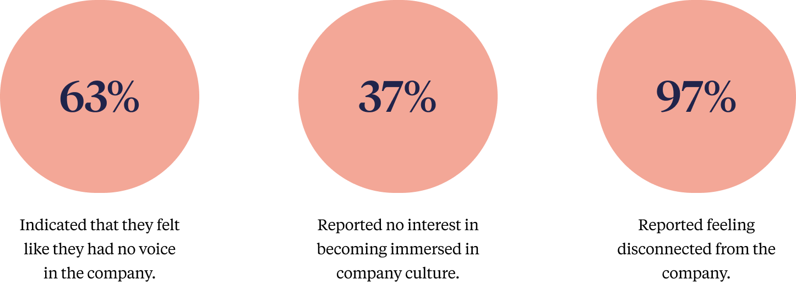
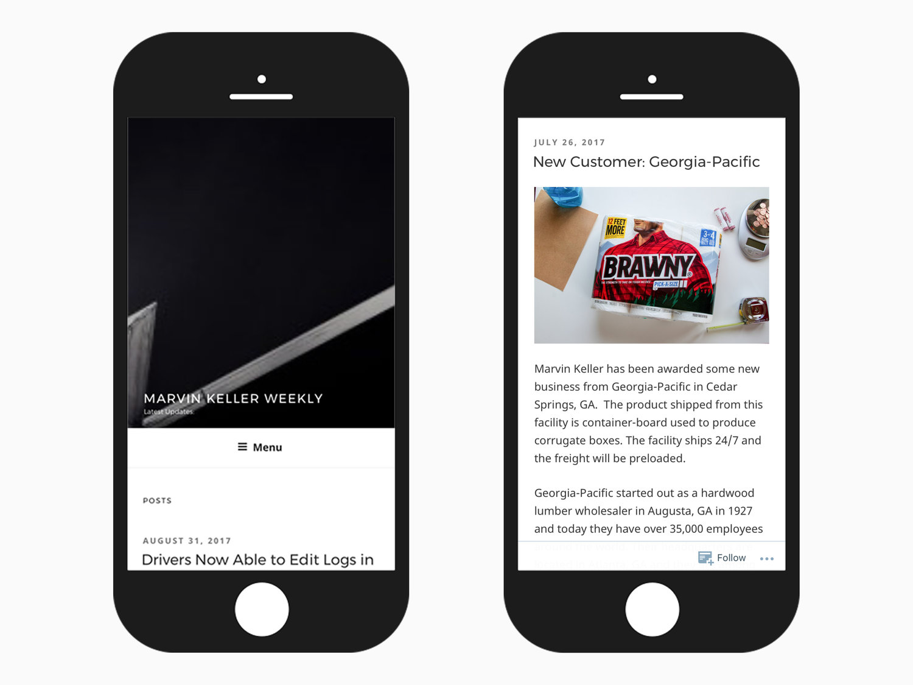
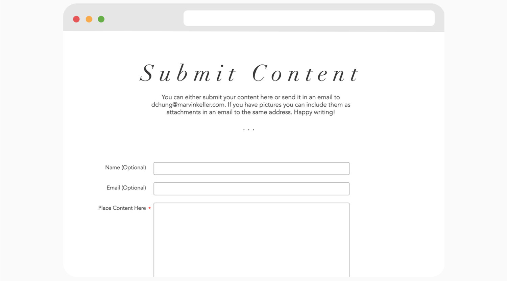
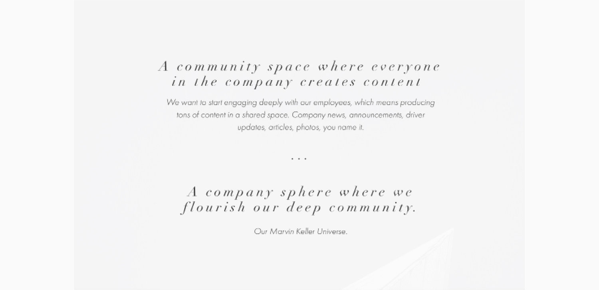
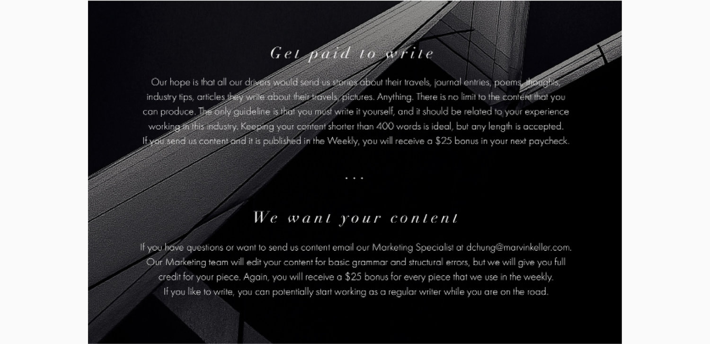

Product Management, UX Design, Research
To improve retention rates for drivers at Marvin Keller, a transportation company.
Due to the difficulty of the industry, the turnover rate for drivers is extremely high. The opportunity cost for one driver for one year is around $75,000, so the company wanted a solution to boost retention.
I rode with a driver for a day to observe his interactions with the company and to ask him questions about his daily routine.
I then created a survey based on these results to find if other drivers felt similarly. We had around 70% of all company drivers participate in the survey.
The survey revealed 3 key trends:
The solution was to develop a convenient platform to expose drivers to the Marvin Keller brand and provide a company wide sphere full of content including news, announcements, updates, photos, tips, etc. Since the content is about themselves, written by themselves, it would be content they want to read.
The mobile platform makes the solution convenient to access from truck stops, hotels, and restaurants across the country.
The form provided drivers a way to submit content from any location on any device. It is meant to empower drivers by encouraging them to provide input.
 We launched a campaign with digital marketing materials and supplementary brochures aimed to help drivers feel appreciated for their input.